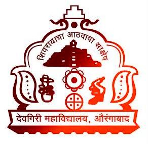

Education
Alliance University, Bengaluru, India
Bachelor's of Technology
Computer Science and Engineering
Related Coursework: Data Structures, Algorithms, Operating System, Computer Architectures, Image Processing, Probability, Statistics, Algebra, Calculus, Artificial Intelligence, Entrepreneurship, Machine Learning, Deep Learning, Cryptography, Signal Processing, Embedded Systems, Microprocessor

Deogiri Jr Collage, Aurangabad, India
12th Grade CBSE, Higher Secondary
Subject studied: Physics, Chemistry, Mathematics, English Core, Painting.
